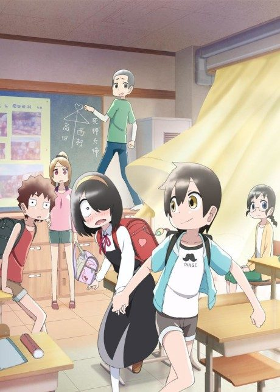
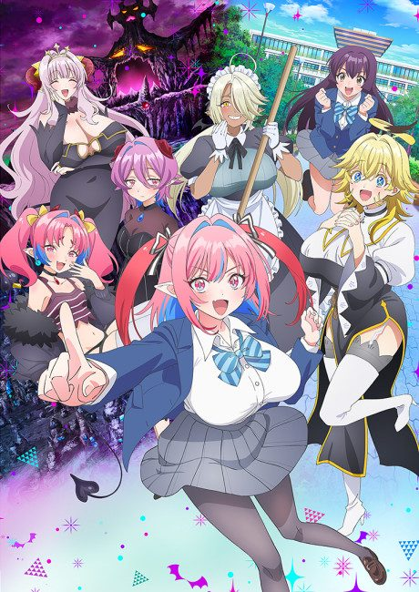

Please Put Them On, Takamine-san
履いてください、鷹峰さん
Takamine, the perfect student council president, can redo any moment by changing her underwear.
We haven't found where the anime ends in the manga yet.
5.8AniList score
—Animeter, no votes yet
12episodes
Rate it or report where you stopped
Is it worth pushing through?
Built from what visitors report across all 12 episodes.
Loading reports…Checking what other people said about this one.
Sign in above with your email to add your report.
More like Please Put Them On, Takamine-san
 Manga Ch. 296.4
Manga Ch. 296.4
 Unclear7.7
Unclear7.7
Manga Ch. 256.2
Mother of the Goddess’ Dormitory
Unclear6.1
My Wife is the Student Council President
Manga Ch. 375.9
My First Girlfriend is a Gal Manga Ch. 886.9
Manga Ch. 886.9

Manga Ch. 647.3 Manga Ch. 1528.3
Manga Ch. 1528.3

Unclear7.0 Manga Ch. 408.4
Manga Ch. 408.4
 Done8.1
Done8.1
 Unclear8.3
Unclear8.3